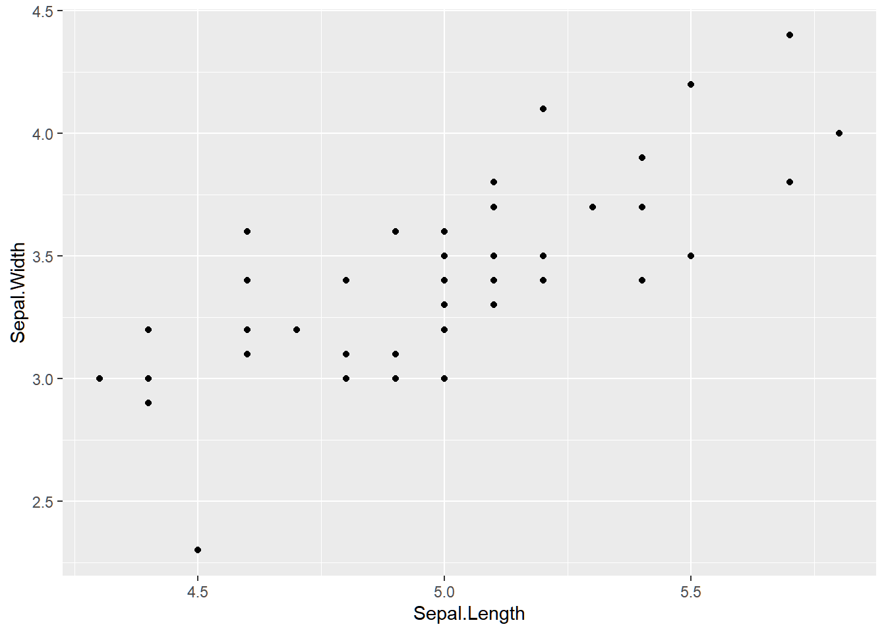
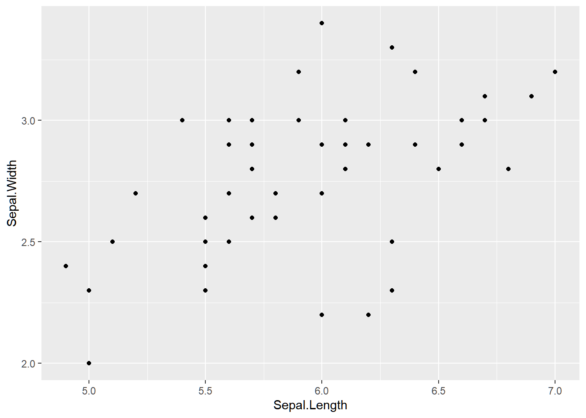
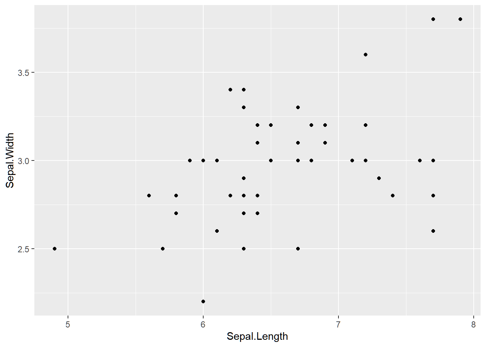

Created by Mauricio Cantor, with modifications by Laura J. Feyrer, Ana Eguiguren, and Reid Steele
This section covers basic programming fundamentals in R, such as loops, user-defined functions, and if/else statements.
NOTE: On refresher pages, some code lines will be commented out to avoid file structure issues surrounding saving files, downloading packages, and changing working directories.
8.1 User-defined functions
In addition to the functions included in base R and in packages, you can also create your own functions to help streamline and share your code (or even make your own package!). Functions are created using the function() command, with the syntax function(arguments){code}. Functions will refer to their arguments as variables internal to them, even if they do not exist in the environment. If they do exist in the environment, the function will prioritize its arguments before the global environment. Functions should almost always end in the return() command, which tells the function what to output when it is run.
# 8. I. Programming fundamentals - Functions -----------------------------------# User-defined functions: function(){}# To create your own function, again, the recipe is the same: # create another object using pre-defined functions. What?# We will use a function called "function()" (boring, I know, but effective!).# For example, a very simple, but limited, function could be the one that sums 5 input values:# We will call it 'sum_5_numbers'sum_5_numbers <-function(value1, value2, value3, value4, value5){ object <- value1 + value2 + value3 + value4 + value5return(object)}# What happened? R saved our function in the workspace# Note the structure: we give it a name, arguments (value1 to 5). It has internal objects (object) and it returns the sum of all arguments. Let's see if it works:sum_5_numbers(value1=10, value2=20, value3=30, value4=40, value5=50)
[1] 150
sum_5_numbers(3,6,90,1,2)
[1] 102
# Sweet! It did his job: summed 10+20+30+40+50.# use this for any formula that you apply frequently# ex: the vertical distance travelled by a free falling # object after x secondsd <-1/2*9.8*5^2d
[1] 122.5
d2 <-1/2*9.8*2^2dist_fall <-function(time_sec){ d <-1/2*9.8* time_sec^2return(d)}dist_fall(20)
[1] 1960
#~~~~ A bit more complex functions----# It is good to have a workflow:# 1. design the steps of your process# 2. identify the inputs of your function# 3. change specific inputs to generic names# 4. add process into the body of your function# I want to simulate rolling a 6-faced dice once:dice <-seq(1:6)sample(dice, 1)
[1] 2
# What about twice?sample(dice, 2, replace = T)
[1] 4 5
# How can I generalize this?n_rolls <-7sample(dice, n_rolls, replace = T)
[1] 1 2 2 5 6 2 6
# Put it in a functiondice_rolling <-function(n_rolls){ results<-sample(dice, n_rolls, replace = T)return(results)}dice_rolling(100)
# A function for a rolling dice in a game# in which you get 10 dollars each time you roll a sixn_rolls <-8win_numb <-6price <-0.10dice_rolling_money <-function(n_rolls, win_numb, price){ results <-sample(dice, n_rolls, replace = T) money <-sum(results == win_numb)*pricereturn(list(results,money))}dice_rolling_money(5, 3, 50)
[[1]]
[1] 6 4 4 6 4
[[2]]
[1] 0
8.2 for loops
for() loops are coding structures designed to repeatedly execute code over a range. Their syntax is for(index in range){code}. When run, the for() loop will repeat the code with the value of the index variable (typically denoted i, but it can be anything) set to every value contained in the range.
# 8. II. Programming fundamentals - For Loops -----------------------------------# used to repeat an action for i number of times# imagine I want to write sentence: today is (weekday)# for each of the week.# Initially you could try:# first making a vector that contains all weekdaysweekday <-c("Monday", "Tuesday", "Wednesday", "Thursday", "Friday", "Saturday", "Sunday")# then pasting it to "today is" for each one:paste("Today is", weekday[1])
[1] "Today is Monday"
# and I'd have to copy and paste this for each day of the week:paste("Today is", weekday[2])
[1] "Today is Tuesday"
paste("Today is", weekday[3])
[1] "Today is Wednesday"
paste("Today is", weekday[4])
[1] "Today is Thursday"
# etc...# When coding, we try to avoid copying and pasting things# more than twice because there is usually a more efficient# way of doing this. # One option is to use a for loop:for(i inseq(1:7)){print(paste("Today is", weekday[i]))}
[1] "Today is Monday"
[1] "Today is Tuesday"
[1] "Today is Wednesday"
[1] "Today is Thursday"
[1] "Today is Friday"
[1] "Today is Saturday"
[1] "Today is Sunday"
# you can also save each of your results in a vectorweekd_sent <-vector(length =7)for(i inseq(1:7)){ weekd_sent[i] <- (paste("Today is", weekday[i]))}weekd_sent
[1] "Today is Monday" "Today is Tuesday" "Today is Wednesday"
[4] "Today is Thursday" "Today is Friday" "Today is Saturday"
[7] "Today is Sunday"
# if you don't know the sequence lenth you can use the argument# seq_along()day_sentence <-vector(length =length(weekday)) # create an empty vectorfor(i inseq_along(day_sentence)){ day_sentence[i]<-paste("Today is", weekday[i])#carries operation for ith day}day_sentence
[1] "Today is Monday" "Today is Tuesday" "Today is Wednesday"
[4] "Today is Thursday" "Today is Friday" "Today is Saturday"
[7] "Today is Sunday"
# RS Note: Some alternative ideas for the same thingday_sentence <-NULLfor(i in1:length(weekday)){ day_sentence <-c(day_sentence, paste("Today is", weekday[i]))#carries operation for ith day}day_sentence
[1] "Today is Monday" "Today is Tuesday" "Today is Wednesday"
[4] "Today is Thursday" "Today is Friday" "Today is Saturday"
[7] "Today is Sunday"
# This is very useful for processing files and making plots:# create an empty list to save each plot in a slotlibrary(dplyr) # package for filtering data
Attaching package: 'dplyr'
The following objects are masked from 'package:stats':
filter, lag
The following objects are masked from 'package:base':
intersect, setdiff, setequal, union
library(ggplot2) #package for plottingdata(iris) # load iris dataset that comes in base Rhead(iris) # see what is in there
# I want to make one graph for each species:levels(iris$Species) # how many species are there?
[1] "setosa" "versicolor" "virginica"
# create list with slot for each plot = speciesp <-vector("list", length =length(levels(iris$Species)))for(i inseq(1:3)){ subset_species <- iris %>%filter(Species ==levels(iris$Species)[i]) p[[i]]<-ggplot(subset_species,aes(x = Sepal.Length, y = Sepal.Width))+geom_point()}plot(p[[1]])

plot(p[[2]])

plot(p[[3]])

8.3 if, else, and ifelse
if() statements are coding structures which are designed to perform an action only if a certain condition is met. Their syntax is if(conditon){action}, where the action is only carried out if the condition is TRUE. else is an extension of if which provides an alternate action to perform if the condition is false, using the syntax if(conditon){action} else {alternative action}. ifelse() is a function which compresses if and else together to be applied to vectors. Its syntax is ifelse(conditon, value if true, value if false), where the condition must be a vector.
# 8. III. Programming fundamentals - If Else -----------------------------------# Perhaps you want parts of you code to run only when # satisfying some conditions. We then use a logical test.# if(): if(condition=true) do_commandif(1==0) print("what?")if(1!=0) print("OK!")
# RS Note - ifelse is vectorized, while if a scalar# if{}else{}: if(condition=true) {do_command1} else{do_command2_instead}# this is useful for long conditions or commandsif (1==0 ){print("are you crazy?")} else {print("OK!")}
[1] "OK!"
# within a function:# Going back to the dice game, we can create similar game# in which you win if you roll the same number# two consecutive times# to keep it simple, we will only do this for 2 rolls#first I'll make n_rolls <-2dice_rolling_pair <-function(n_rolls){ dice <-seq(1:6) results <-sample(dice, n_rolls, replace = T)if(results[1]==results[2]){print("win")}else{print("loose") }}dice_rolling_pair(2)